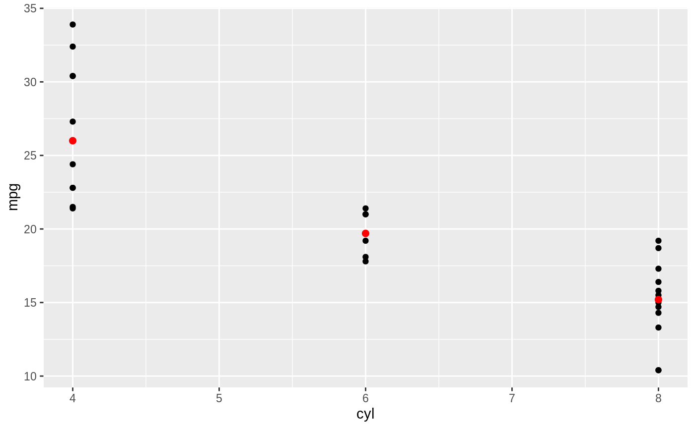
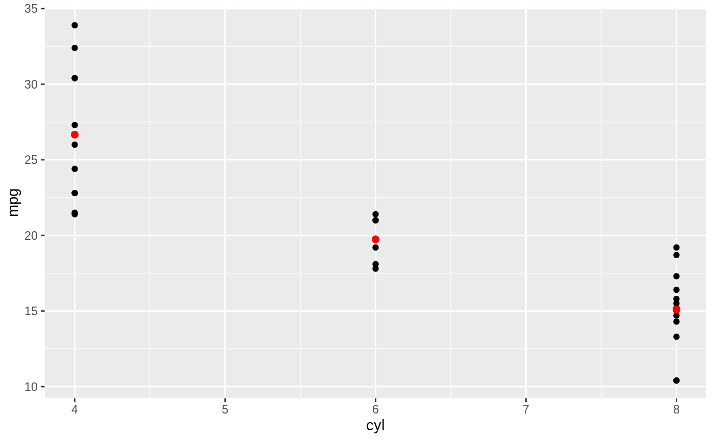
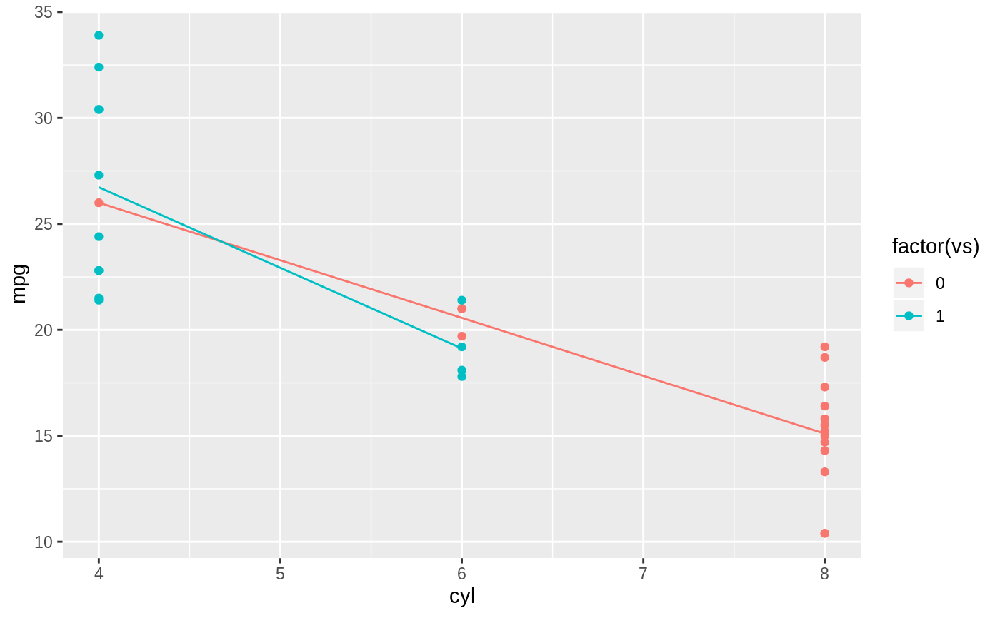
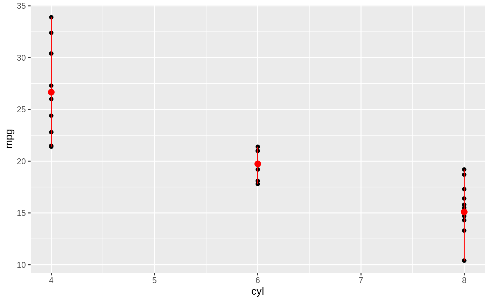
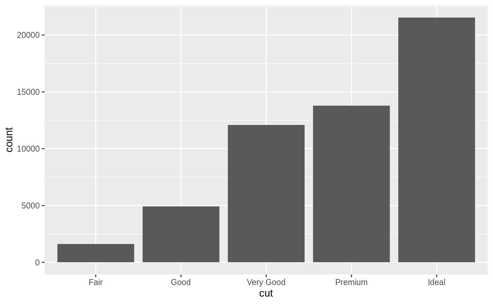
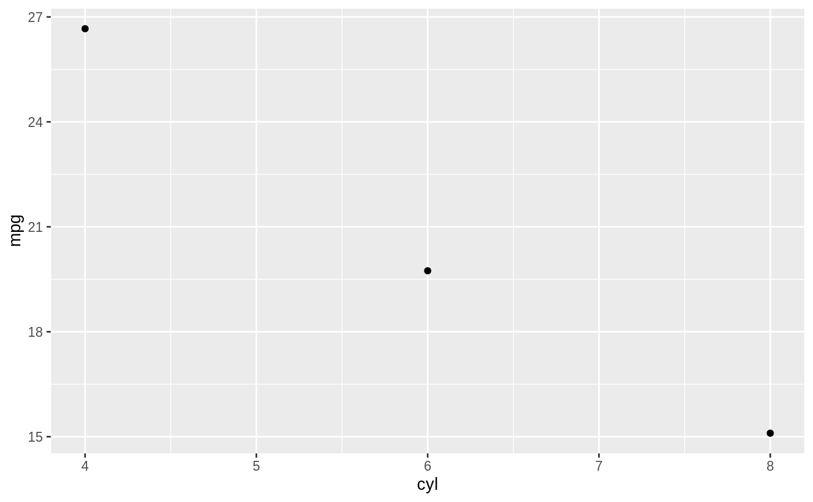
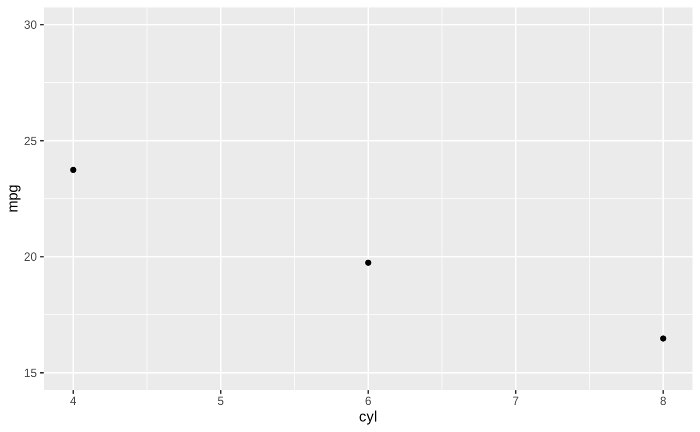
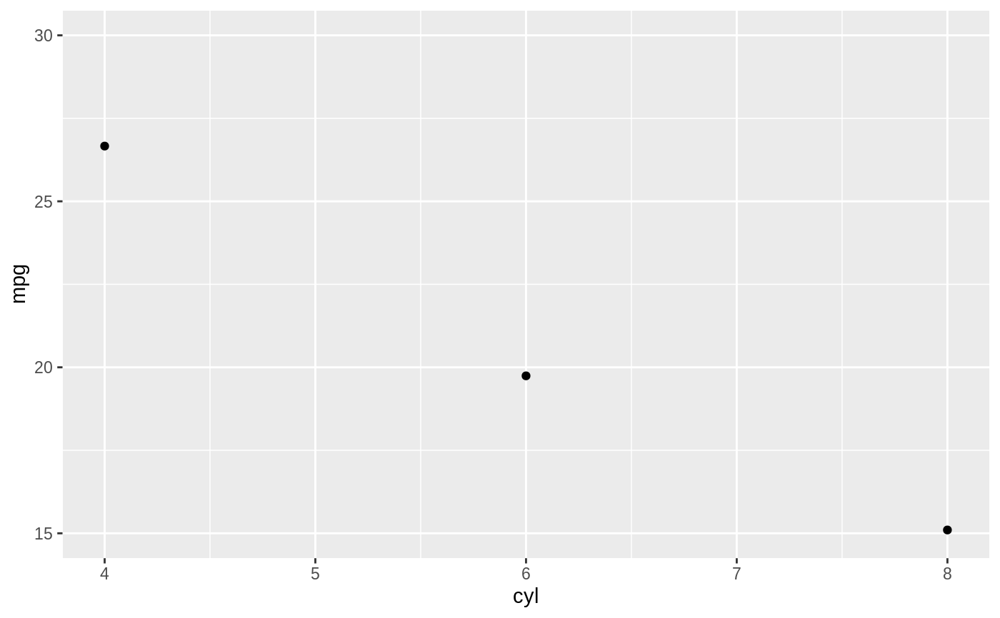
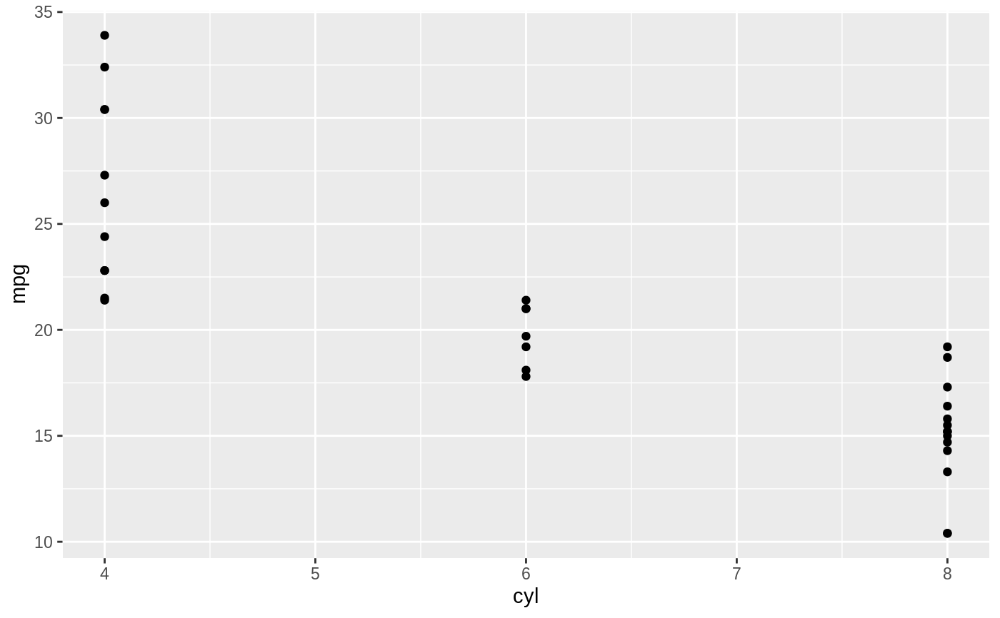

Summarise y values at unique/binned x
Source:R/stat-summary-bin.R, R/stat-summary.r
stat_summary.Rdstat_summary operates on unique x; stat_summary_bin
operates on binned x. They are more flexible versions of
stat_bin(): instead of just counting, they can compute any
aggregate.
stat_summary_bin(mapping = NULL, data = NULL, geom = "pointrange", position = "identity", ..., fun.data = NULL, fun.y = NULL, fun.ymax = NULL, fun.ymin = NULL, fun.args = list(), bins = 30, binwidth = NULL, breaks = NULL, na.rm = FALSE, show.legend = NA, inherit.aes = TRUE) stat_summary(mapping = NULL, data = NULL, geom = "pointrange", position = "identity", ..., fun.data = NULL, fun.y = NULL, fun.ymax = NULL, fun.ymin = NULL, fun.args = list(), na.rm = FALSE, show.legend = NA, inherit.aes = TRUE)
Arguments
| mapping | Set of aesthetic mappings created by |
|---|---|
| data | The data to be displayed in this layer. There are three options: If A A |
| geom | Use to override the default connection between
|
| position | Position adjustment, either as a string, or the result of a call to a position adjustment function. |
| ... | Other arguments passed on to |
| fun.data | A function that is given the complete data and should
return a data frame with variables |
| fun.ymin, fun.y, fun.ymax | Alternatively, supply three individual functions that are each passed a vector of x's and should return a single number. |
| fun.args | Optional additional arguments passed on to the functions. |
| bins | Number of bins. Overridden by |
| binwidth | The width of the bins. Can be specified as a numeric value
or as a function that calculates width from unscaled x. Here, "unscaled x"
refers to the original x values in the data, before application of any
scale transformation. When specifying a function along with a grouping
structure, the function will be called once per group.
The default is to use The bin width of a date variable is the number of days in each time; the bin width of a time variable is the number of seconds. |
| breaks | Alternatively, you can supply a numeric vector giving
the bin boundaries. Overrides |
| na.rm | If |
| show.legend | logical. Should this layer be included in the legends?
|
| inherit.aes | If |
Aesthetics
stat_summary() understands the following aesthetics (required aesthetics are in bold):
xygroup
Learn more about setting these aesthetics in vignette("ggplot2-specs").
Summary functions
You can either supply summary functions individually (fun.y,
fun.ymax, fun.ymin), or as a single function (fun.data):
- fun.data
Complete summary function. Should take numeric vector as input and return data frame as output
- fun.ymin
ymin summary function (should take numeric vector and return single number)
- fun.y
y summary function (should take numeric vector and return single number)
- fun.ymax
ymax summary function (should take numeric vector and return single number)
A simple vector function is easiest to work with as you can return a single
number, but is somewhat less flexible. If your summary function computes
multiple values at once (e.g. ymin and ymax), use fun.data.
If no aggregation functions are supplied, will default to
mean_se().
See also
geom_errorbar(), geom_pointrange(),
geom_linerange(), geom_crossbar() for geoms to
display summarised data
Examples
d <- ggplot(mtcars, aes(cyl, mpg)) + geom_point() d + stat_summary(fun.data = "mean_cl_boot", colour = "red", size = 2)#> Warning: Computation failed in `stat_summary()`: #> Hmisc package required for this function# You can supply individual functions to summarise the value at # each x: d + stat_summary(fun.y = "median", colour = "red", size = 2, geom = "point")d + stat_summary(fun.y = "mean", colour = "red", size = 2, geom = "point")d + stat_summary(fun.y = mean, fun.ymin = min, fun.ymax = max, colour = "red")# \donttest{ # Don't use ylim to zoom into a summary plot - this throws the # data away p <- ggplot(mtcars, aes(cyl, mpg)) + stat_summary(fun.y = "mean", geom = "point") p#> Warning: Removed 9 rows containing non-finite values (stat_summary).# A set of useful summary functions is provided from the Hmisc package: stat_sum_df <- function(fun, geom="crossbar", ...) { stat_summary(fun.data = fun, colour = "red", geom = geom, width = 0.2, ...) } d <- ggplot(mtcars, aes(cyl, mpg)) + geom_point() # The crossbar geom needs grouping to be specified when used with # a continuous x axis. d + stat_sum_df("mean_cl_boot", mapping = aes(group = cyl))#> Warning: Computation failed in `stat_summary()`: #> Hmisc package required for this function#> Warning: Computation failed in `stat_summary()`: #> Hmisc package required for this function#> Warning: Computation failed in `stat_summary()`: #> Hmisc package required for this function#> Warning: Computation failed in `stat_summary()`: #> Hmisc package required for this function# An example with highly skewed distributions: if (require("ggplot2movies")) { set.seed(596) mov <- movies[sample(nrow(movies), 1000), ] m2 <- ggplot(mov, aes(x = factor(round(rating)), y = votes)) + geom_point() m2 <- m2 + stat_summary(fun.data = "mean_cl_boot", geom = "crossbar", colour = "red", width = 0.3) + xlab("rating") m2 # Notice how the overplotting skews off visual perception of the mean # supplementing the raw data with summary statistics is _very_ important # Next, we'll look at votes on a log scale. # Transforming the scale means the data are transformed # first, after which statistics are computed: m2 + scale_y_log10() # Transforming the coordinate system occurs after the # statistic has been computed. This means we're calculating the summary on the raw data # and stretching the geoms onto the log scale. Compare the widths of the # standard errors. m2 + coord_trans(y="log10") }#>#> Warning: there is no package called ‘ggplot2movies’# }